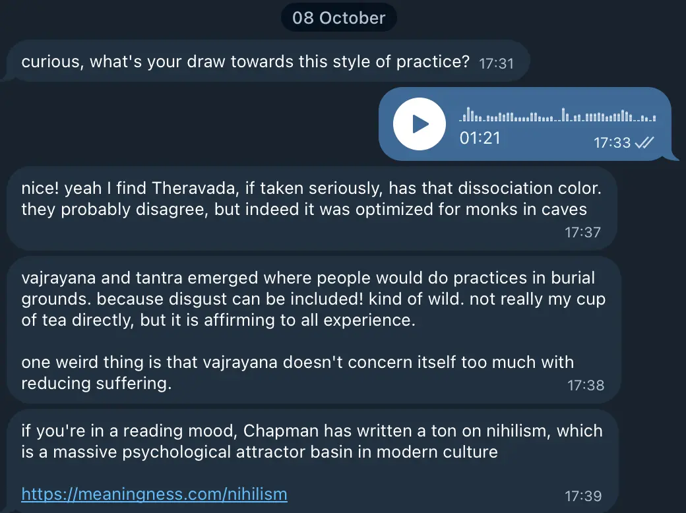

- Log per day - 2025
- Told a friend that I’ve been feeling kinda nihilistic and dissociated (re: why Evolving Ground’s “Open Awareness” practice is currently feeling appealing to me) and he recommended a David Chapman post about it

I’ve been feeling kinda nihilistic/dissociated
- Last ~1 month has looked like:
- “Ship It Week” at Casa Tilo
- A week in Oxford to see if it could be a good long-term base
- 1.5 weeks in Berlin with the post-TreeWeek crew
- 1 week at the hippy retreat near Hamburg
- And I’ve felt maybe slightly dissociated at all of them
- But I think actually maybe not? Maybe I’ve just not been finding certain things meaningful? For example:
Things I’ve not been finding meaningful
- Berlin → brunch with people I don’t know that well yet - feeling dissociated, low aliveness, withdrawn. Maybe it’s a spiritual crisis, or maybe I’d just rather do 1:1s with people to get to know them more
- Hippy retreat → no desire to do various workshops, no desire to e.g. pretend to be a cat and meow in a group etc, lol. This isn’t dissociation, this is just a dispreference for that kind of thing
Things I have been finding meaningful
- Music!
- Whilst feeling like “hm maybe I’m kinda dissociated” at the hippy retreat, I realised just now whilst writing this that actually I was feeling really obsessed with a few songs for the whole retreat, “Cobra” by Geese and “Drinking Age” by Cameron Winter. Like, I was humming/singing them for basically the whole retreat, lol
- Playfighting! There was a workshop where we playfought, and all 30 of us sat in a circle and people would step in to fight, and I was the first person to step into the middle, super excited to fight, lol. Was super super fun
- I have no desire to pretend to be a cat. I have no desire to do ecstatic dance. I have no desire to talk to lots of people. But I do have a desire to do circling, to fight people, to do contact improv (this was actually super fun and connective)
So, the problem isn’t a lack of meaning, but not skillfully shaping my life
- E.g., in Berlin, I’d go along to brunches and house-parties where there was really no aliveness in my system. Vs at the hippy retreat, I was actually much more skillful re: leaving workshops early, and also just not going to a bunch of the retreats
- Retreat schedule and what I attended vs didn’t attend:
- Day 1
- 8am yoga → ❌ skipped, too early, too sleep deprived
- Opening circle → ✅
- Playfight → ✅
- Ecstatic dance → 🟠 attended although I left early/spent most of the time lying down in the corner lol))
- Day 2
- 8am group meditation → ❌ skipped, too frickin early. Also, I’m not that interested in one-off meditation things really
- Contact improv → ✅ this was actually really great, very well facilitated. Started solo on the floor, then did partner exercises, then did a group flow thing that mostly involved us all rolling around on the floor on top of each other, lol
- Authentic relating → ✅ I really like AR, feels like a nice facilitated way to deepen connection with people
- Ecstatic dance → ❌ 2 days in a row?? Already danced out from 2 night club nights in Berlin
- Day 3
- 8am grounding practice → ❌ skipped, too frickin early
- Yoga → 🟠 attended for half of it, 90 minutes is too longggg I got sweaty and bored
- Non-verbal circling → 🟠 attended for a bit them left. It was more like “non-verbal authentic relating” as it was mostly partner exercises, with no talking at all, which was cool. I was mostly with a feeling of groundedness and stillness, vs other people were very playful, making monkey noises and shit, felt a implicit need/expectation to be playful like everyone else which I resisted which felt really good. Eye-roll energy at all the noise and energy
- Platonic temple & cuddle puddle → 🟠 attended for like 5 minutes and did not want to pretend to be a cat in groups of 4 lmao. Could’ve left and returned later but just didn’t feel any aliveness, went to the sauna instead. A sense of “I don’t really want to touch these strangers and be touched, I’m good dude”
- Day 4
- 8am group meditation → ❌ skipped, too early and no desire for one-off group meditation
- Argentine tango → ❌ nah, was feeling kinda disconnected to the group at this point after skipping so many things, and also no real desire to move
- Ecstatic dance → ❌ 3 in 4 days?? Way too much for me lol, a very happy skip
- Closing circle → ✅ you kind of had to attend this one and I found it kinda icky, it was all 30 of us in a circle and we were to share things that we appreciated about each person, like 90 seconds per person and you’d say things you appreciated. Sweet in theory but a) I was feeling kinda disconnected from the group after spending so much time alone, and also the pace was kinda frantic to fit everyone in, like the tempo was very high which made
- Day 1
Then we had a few unstructured days
I went on some runs, mostly just chilled on my own, chatted with people a little bit at meal times but really followed my aliveness and lack thereof
Anyway idk, the end? I want to get better at remembering my preferences, but also I’m happy with the amount that I honoured my aliveness and lack thereof at the retreat, hell yeah 😎
It was too yin, barely any yang
- Really like this old post by Sasha Chapin → Self-Love Doesn’t Require You to Become Huggy and Passive